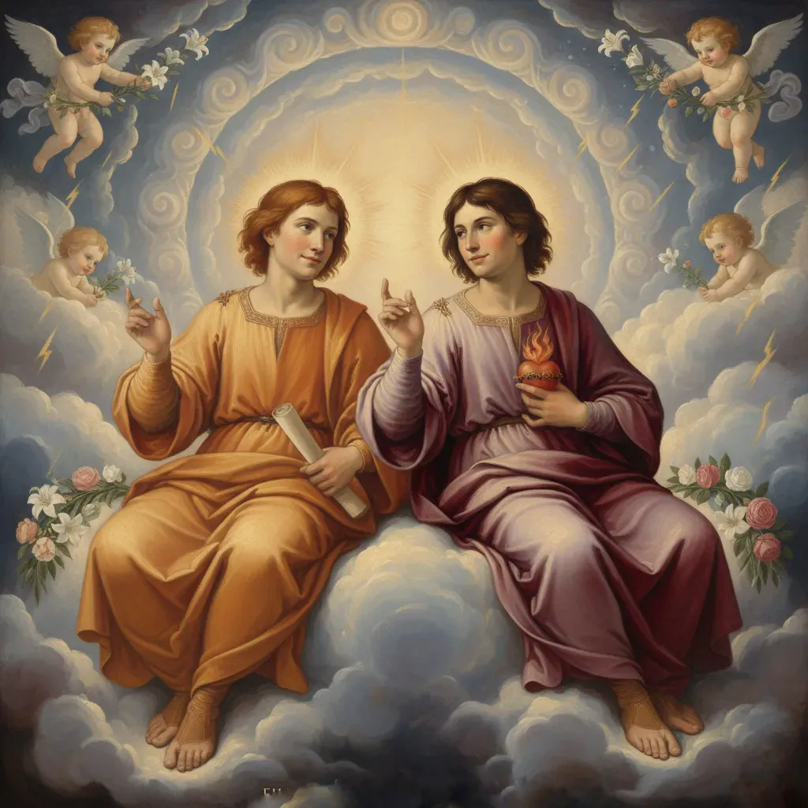
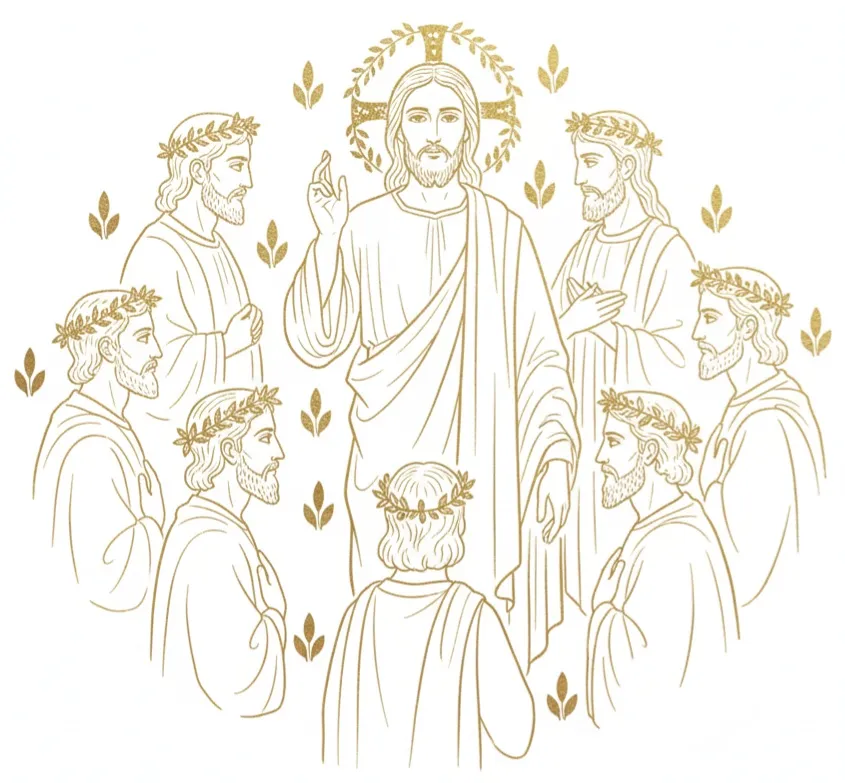

The Skull and the Tree of Life Symbolism
Bible, Scripture, good, evil, vine, branch, fruit, Genesis
The skull is the rock , the head is the church, the garden is the conscious field, and the Tree of Life is the pattern and unfolding of consciousness seeded in assumption . The 'word of God' is your inner dialogue.
Adam and Eve Expelled From the Garden
Bible, Scripture,woman, sorrow, pain, Genesis, sin
After Adam names the animals — the moods and feelings of the mind — Eve listens to one instead of ‘I AM,’ shattering the garden of pleasure and casting consciousness down into exile .
Job
Bible, Scripture,sin, man, breath, spirit, wind, breeze, vapour
Job, frustrated and suffering that the world won’t bend to his righteousness, sees a hand in the whirlwind—and in that moment, he makes the connection: God appears only when judgment is recognised as existing solely in your "I AM"
The Progression of the Four Gospels
Bible, Scripture,Gospels, Assumption, Four, Matthew, Mark Luke, John, New Testament, patriarchs
The repetition of the Gospels show the progression and improvement of readers of Assumption with each attempt. image of Jesus who saves , the reader puts the teachings of Abraham, Jacob, Joseph, and Judah to the test
Visions of a Man in the Song of Solomon and Book of Daniel
Bible, Scripture,vision, prophecy, genesis, prophet, identity
The Book of Daniel and the Song of Solomon present visions of men adorned with precious gems, luxurious ornaments, and radiant features, symbolising the reader assuming a new, glorified state of being.
Man 'in his image' of
Jacob and his Wives
Bible, Scripture,Genesis, marriage, bride, love
Leah represents the tired state that believes outer conditions determine life. bride , represents the new assumption — imagination loved and acknowledged.
Solomon and his Bride
Bible, Scripture,husband,Genesis, love, joining, cleaving, bride, bridegroom, shulamite
Solomon and his bride portray the marriage of "I AM" and feeling through it's sensuous allegory . Genesis 2:24 confirms the feeling of realness with:
Moses Strikes The Rock
Bible, Scripture,Rock, Skull
Moses strikes the rock of the skull in an attempt to bring forth streams of Edenic promise, to consciousness that's dry and barren.
The Creation Story
Bible, Scripture,, Garden Eden,Genesis, Elohim
The true, biblical creation story presents human imagination in motion. The judges and rulers of the mind convening to create the self .
Interpreting the Time
Bible, Scripture,Time, Seed, Christ, Saviour
Using the weather as an analogy, Jesus reminds himself that he keeps looking to external conditions, forgetting to read the inner assumptions that shape each moment of the present.
Joseph And His Brothers During Famine
Bible, Scripture,Genesis, Egypt, abundance, pharaoh, bondage, Joseph, Simeon, Issachar, Reuben, Benjamin, Levi, Dan, Naphtali, Gad, Asher, Naphtali, Zebulan
Joseph flourishes in imagination despite famine in the mind, yet the inner brothers of his own psyche resist alignment, turning away from the abundance he seeks to give them.
Jacob and Laban
Bible, Scripture,Genesis, Nabal, love, beast, Laban, Jacob
Jacob leaves the established order of Laban , fulfilling Genesis 2:24 by stepping out of the old house to pursue love and claim a new destiny through imagination and resolve
Nabal and Abigail>
Bible, Scripture,Laban, fool, folly beast, sin
Like Laban, Nabal the Fool is the definition of sin , the self entrenched in the established habitual order, and runs counter to the new assumption. He dies when Abigail chooses to pursue with the new assumption.
Garden of Eden
Bible, Scripture,Genesis,Carmel,pleasure, garden
"..plants yielding seed, and fruit trees bearing fruit in which is their seed, each according to its kind..". seed bearing fruit is reader's assumption.
Jacob Wrestles
Bible, Scripture,Identity, Father,patriarch, persistence,teacher
Jacob wrestles with himself , striving to embody a new ideal. He is determined that the witnessing angel will bless the union and carry the news of the new transformation throughout the psyche
Mordecai and Esther
Bible, Scripture,cousin, king, queen, vashti, Queen, star, Ahasuerus, Xerxes, Vashti.
Mordecai is the inner influence that nurtures Esther – a fresh, beloved assumption – to sway the long-dominant ruler of the mind.
Saul Vs David
Bible, Scripture,Old,New natural,man,men
David and Saul — the conflict between the old self and the embodied new assumption: David represents the new be-loved identity, seeded in imagination and confidence
Disciple Peter: Clean and Unclean
Bible, Scripture,rock, faith, Apostle, apostles
Adam naming the animals shows thoughts and feelings as states of mind; Peter’s vision reveals that none are unclean when the I AM sanctifies them — consciousness determines what becomes possible.
Mary and Martha - The Master is Here
Bible, Scripture,New Testament, gospels,Eve, women woman
Mary and Martha represent two mental postures: one busy and distracted, the other devoted. The Master — the I AM — reveals that salvation lies in inward attention and adoration.
Phillip Seeks God
Bible, Scripture,apostle, apostles, Elohim, Brothers
Disciple Philip seeks God outside himself, but Jesus shows that seeing Him is seeing the Father —God is your own awareness, your imagination.
Jacob's Peeled Rods
Bible, Scripture,Genesis, craft, budding,wand Aaron,tree,leaf, eden, garden
Jacob's rooting and grafting of wood is symbolic of the Tree of Life , the pathway of that assumes inner fulfillment over outer causation.
He demonstrates the seed in itself.
Jesus is the successor of all previous states.
Bible, Scripture,Christ, anointed, saves, saviour
Jesus is the sum and fulfilment of the states symbolised by every biblical character before him.
Jacob Supplants Esau's Identity
Bible, Scripture,vision, prophecy, Genesis, senses, man
Jacob supplants the identity of Esau leaving the image of old Jacob and Esau to fade away.
They Shall Become One Flesh
Bible, Scripture,Genesis, love, spirit holy, marriage, union, believe, receive
The hand of God is the readers "I AM" always forming the self in the mind . "they shall become one flesh" means to make it a reality
House of God
Bible, Scripture,skull, temple arc, ark,tent, rock, Genesis
The house of God is the head - container of the world of imagination.
James and John
Bible, Scripture,apostle, apostles, brothers

Disciples James and John — Sons of Thunder - are passionate and faithful aspects of the psyche. Chosen apostles of the self who support the Christ
Jonah
Bible, Scripture,sin, fish, whale
a
After getting swallowed up by lack instead of consuming it, Jonah is an aspect of the psyche who keeps evading the work!
Mary Calls Jesus Gardener
Bible, Scripture,New Testament, gospels,Eden,Adam pleasure, Carmel, garden, Magdalene
In the garden, Mary calls Jesus "Gardener" . Showing Adam and Eve's return to Eden
Mary
Bible, Scripture,Mary Magdalene, woman, women, Eve
Mary in the resurrected assumption
Paul Re-establishes the Apostles
Bible, Scripture,disciples, Brothers, government, brothers
Paul admonishes aspects of himself , reestablishing the inclusion of his supporting apostles
God
Bible, Scripture,Hosts, Living God, Lord, Head

Elohim - God and the kingdom of God are the rulers and judges of the self. Your inner government
Disciples
Bible, Scripture,apostles, apostle, brothers, New Testament, gospels
The supporting aspects of self have fallen asleep. Like Eutychus: The Boy Who Fell From the Window
Sarah Laughs
Bible, Scripture,pleasure, joy, happiness, bliss, laughter, woman,women,Eve, Abraham, Genesis
Sarah, the self unaccustomed to joy, laughs at the idea of the law of Assumption
Locked Out of the Garden Eden
Bible, Scripture,joy, Carmel, consciousness, Genesis
Locked out of the Garden of Eden — meaning "pleasure" — by doubt
Jesus with Tax Collectors and Sinners
Bible, Scripture,New Testament, gospels, Christ, sin
Jesus hanging out with tax collectors and sinners shows the parts of the self tied to worldly transactions being brought into line with new assumption
Paul's Reminder to Live in the End
Bible, Scripture,Letters, ask believe receive, flesh
Paul's reminder to himself with regards to really living in the end! Either you possess it imaginatively or you do not.
"For who sees anything different in you? 1 Corinthians 4:7